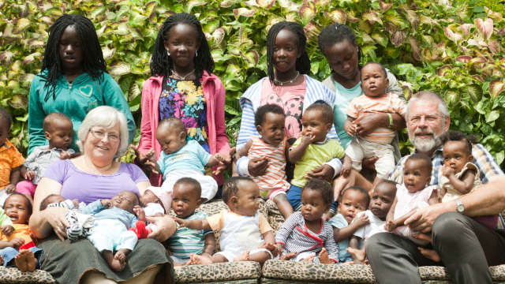

√úber Uns
Wie wir anfingen und wohin es noch geht
Wie wir anfingen und wohin es noch geht
Im Jahr 2019 hat Noahs Arche Kinderhaus Uganda (NACMU) seinen 20. Geburtstag gefeiert.
Gegründet durch Piet und Pita Buitendijk als eine nicht-kirchlich christliche Organisation ursprünglich als Waisenhaus gedacht, bietet es nun weitreichende Unterstützung für Ugandas vulnerabelste Kinder an um die ärmlichsten Verhältnisse in der direkten Umgebung zu verbessern.
Aktuell umfasst NACMU das Kinderhaus, die Kita, eine Grundschule, eine Berufsoberschule, eine Poliklinik mit Mangelernährungszentrum, ein Bauernhof und weitere Einrichtungen zum autaken Leben.
Über die Jahre konnten wir das Leben tausender Kinder und Erwachsener verbessern. Mehr als 190 Kinder nennen zur Zeit NACMU ihr Zuhause und mehr als 350 Schüler sind in unseren Schulen angemeldet. Unsere Poliklinik hat unzählbar vielen anderen in der Umgebung geholfen.
Piet und Pita mit einigen der Kinder
1999 haben Piet und Pita angefangen in ihrem Mietshaus in Kampala ein sicheres Zuhause für verlassene und misbrauchte Kinder anzubieten. Bald wurde die Anzahl der Kinder, die Hilfe brauchten so groß, dass das Gebäude zu klein wurde so, dass Piet und Pita 2006 mit ihren Kindern ein neues Zuhause in Mukono (Distrikt von Uganda) mit sehr viel Platz zum Wachsen gefunden haben. Das Projekt ist seitdem deutlich gewachsen und wächst stetig weiter.

Link: Das Mietshaus in Kampala. Mitte und Rechts: das Kinderhaus im Bau
Als wir an unseren aktuellen Standort umgezogen sind, haben wir die "New Horizon" Grundschule gegründet. Damals war das nur eine Grundschule mit nur den ersten unteren Jahrgängen, aber heute bietet New Horizon eine vollständige Ausbildung von der Vorschule / Kita bis zum Berufsgymnasium an. Allerdings sind die Schulen nicht nur zugänglich für Schüler aus dem Projekt, sondern für alle, weil wir eine staatlich öffentliche Akkreditierung haben und den offiziellen Rahmenplan lehren. Der weitestgehend größte Teil der Nicht-Projekt-Schüler kommt aus den umliegenden ärmlichsten Gegegenden. Diese Schüler können wir kostenlos aufnehmen auf Spenden-Basis, ansonsten würden diese Kinder / Teenager keine oder keine ausreichende Bildung bekommen und auf dem Feld etc. arbeiten, da sich die Familien einen Schulbesuch nicht leisten können für ihre Kinder.
Bald ist uns klar geworden, dass ein weiterer kritischer Baustein, der hier fehlt eine gute medizinische Grundversorgung ist, deshalb haben wir unsere Poliklinik gegründet. Diese versorgt unsere Kinder, Schüler und Angestellte sowie alle aus der näheren Umgebung. Das Hauptaugenmerk liegt dabei auf die Versorgung von Müttern, Kindern und Mangelernährung. Wir bieten eine günstige medizinische Grundversorgung auf hohem Niveau.
Als die j√ºngeren Kinder √§lter wurden haben wir uns entschieden "Familienh‰user" einzurichten, um ihnen ein so normal wie m√∂gliches Familienleben zu bieten. Bald werden unsere √Ñltesten ein Alter erreichen, wo sie auf ihren eigenen Beinen stehen m√ºssen.
Über die Jahre haben hunderte von ungewollten, ausgestoßenen oder mißbrauchten Kindern eine liebenes Zuhause gefunden in unserem Kinderhaus, wo sie die Liebe und Zuwendung bekommen, die sie brauchen. Es ist uns auch gelungen hunderte von Kindern wieder mit ihren Familien zu vereinigen oder Adoptiveltern innerhalb Ugandas für sie zu finden.

Ein Luftbild vom Noahs Arche Gelände
Wir werden weiter hart dafür Arbeiten unsere Ziele und Mission zu verfolgen. Tagein und tagaus setzten für uns für eine bessere Zukunft unserer Kinder, Schüler und ganz Ugandas ein. Wir werden weiterhin bedürftigen Kindern helfen, sie versorgen und ihnen Sicherheit, Liebe und ein Zuhauss, wenn notwendig bieten. Wir hoffen das unsere Kinder eines Tages selbst eigene, gesunde und intakte Familien gründen werden und somit den Teufelskreis von Armut, Resigniertheit und Mißbrauch durchbrechen.
Für unseren New Horizon Absolventen ist unsere Hoffnung, dass sie in die Welt hinausgehen und selbst Arbeitsplätze schaffen.
Wir laden Sie ein ein Teil unserer Arbeit zu werden. Finden Sie raus wie Sie mithelfen können.